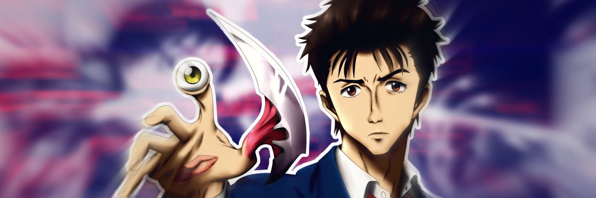
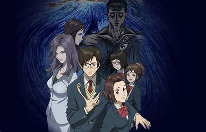
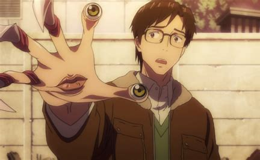

Parasite

Fiche descriptive:
Nom: Parasite
Type: Seinen
Studio d'annimation: Madhouse
Disponible gratuitement sur Crunchyroll
Nombre d'épisode: 24
Résumé:
Parasite
nous raconte l’histoire d’un lycéen trouillard,
timide et quelque peu maladroit qui se retrouve avec un parasite dans le bras droit.
Terrorisé, il va devoir apprendre à cohabiter avec cet intrus,
mais aussi traiter avec ses semblables parasités.
Chacun cherche un équilibre dans cette coexistence impromptue,
en dépit de leurs objectifs et mentalités divergents.
Dans cet anime, l’horreur est au rendez-vous,
car les parasites qui ont pris le contrôle total de leurs hôtes s’adonnent
à des meurtres sanglants pour se nourrir,
et ils ne sont pas tendres non plus envers leurs congénères.
Parasite nous entraine alors dans cet univers, mélangeant habilement suspense, horreur, psychologie,
mais aussi humour.
Avis:
Le début semble classique, cependant non moins intriguant,
et nous nous attachons rapidement à notre héros et son parasite à la personnalité opposée.
Les points de vue humains-parasites se confrontent, donnant lieu, d’une part,
à des réflexions pas forcément révolutionnaires, mais intéressantes tout de même,
et d’autre part à des scènes comiques où Migi, parasite du protagoniste,
a des réactions complètement décalées, sans gêne, contrastant avec la pudeur de son hôte.
De plus, bien que les personnages secondaires ne soient pas aussi mis en avant qu’escompté,
l’histoire est prenante, les différents combats entre les personnages sont fulgurants,
nous permettant d’accrocher un peu plus encore à cet anime,
et l’animation y ajoute un charme que nous ne saurons qu’apprécier.

